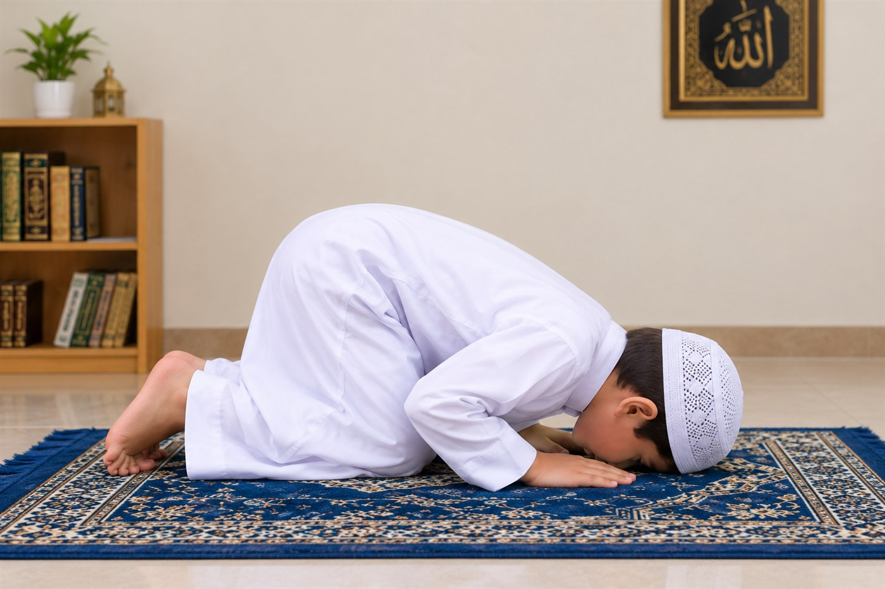

Le Soujûd — Se prosterner devant Allah

Après s'être redressé de l'inclinaison, le fidèle dit : Allahou akbar, puis se prosterne sur sept parties : le front avec le nez, les deux mains, les deux genoux et les extrémités des deux pieds. Il écarte les bras des flancs autant que possible, ne pose pas les avant-bras à plat sur le sol et reste tranquille dans la prosternation.
La formule la plus connue est : Soubhâna rabbiya-l-a'lâ (Gloire à mon Seigneur, le Très-Haut), répétée trois fois ou davantage. Il est également rapporté : Soubhânaka Allahoumma rabbân wa bi-hamdika, Allahoumma-ghfir lâ.
Parmi les invocations rapportées : Allahoumma laka sajadtu, wa bika âmntu, wa laka aslamtu.